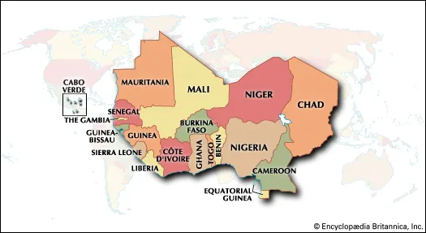

Dinner es un restaurante/cafetería de cuatro - cinco estrellas que tiene la mezcla de entre la gastronomía africana junto con la gastronomía occidental.
El restaurante Dinner fue inventado el 1 de octubre del 2020 por Malameh Konteh. Un estudiante que aportó esta idea de mezclar diferentes platos típicos para experimentar las culturas de diferentes países y comer en harmonía.
En Dinner, como hemos mencionado anteriormente, tiene la mezcla de entre la gastronomía africana junto con la gastronomía occidental.
Entre ellos los platos africanos de países como Gambia, Mali, Senegal, Mauritania, Guinea, Marruecos y un largo etcétera.

También de la gastronomia occidental entran platos de países generalmente de Europa y América.
El diseño de nuestro restaurante está hecho gracias a una empresa catalana llamada Nou3Design
.
Esta empresa se encargó de hacer el diseño pidiendo una estructura en el que todos se puedan sentir como en su casa usando únicamente tres colores para que dé un buen ambiente: Blanco, Gris y Negro
Dando un resultado totalmente favorable a nivel de diseño para el interior.